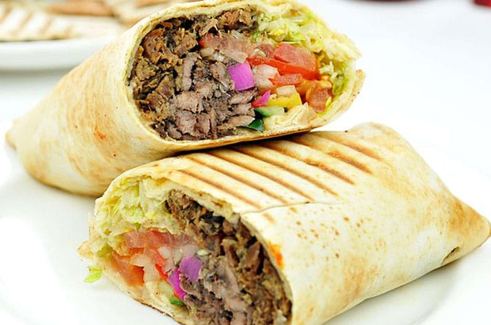

Shawarma

Taste the Street Food Sensation: Perfectly Spiced Shawarma Wraps
Shawarma epitomizes the vibrant street food culture of the Middle East.
Thinly sliced marinated meat - chicken, lamb or beef - is masterfully stacked and
slowly roasted on a vertical rotisserie, self-basting into juicy perfection.
Shaved into tender ribbons, the aromatic meat is wrapped in warm pita with crisp
vegetables, tangy pickles, and creamy tahini or garlic sauce. Each portable bite
captures the harmony of spices, herbs, and irresistible char from the rotisserie. An
iconic culinary marvel,
shawarma transports you to the bustling markets of the Levant.
Ingredients
- 2 lbs boneless
lamb shoulder or beef sirloin, thinly sliced
- 1/4 cup olive oil
- 1/4 cup lemon juice
- 4 cloves garlic, minced
- 2 teaspoons ground cumin
- 2 teaspoons ground coriander
- 1 teaspoon paprika
- 1 teaspoon cinnamon
- 1 teaspoon allspice
- Salt and pepper to taste
- Pita bread or flatbread
- Shredded lettuce
- Diced tomatoes
- Sliced red onion
- Pickled turnips (optional)
- 1/2 cup tahini (sesame seed paste)
- 1/4 cup lemon juice
- 2 cloves garlic, minced
- 1/4 cup water
- Salt to taste
- Hot sauce or chili paste (optional)
- Chopped parsley for garnish
Steps
- Marinate the Meat: In a large bowl, combine the sliced lamb or beef with olive oil, lemon juice, minced garlic, cumin, coriander, paprika, cinnamon, allspice, salt, and pepper. Mix well to coat the meat evenly with the marinade. Cover and refrigerate for at least 2 hours or up to overnight.
- Prepare the Tahini Sauce: In a small bowl, whisk together the tahini, lemon juice, minced garlic, water, and salt until well combined and creamy. Adjust the consistency by adding more water if needed. Set aside.
- Cook the Shawarma Meat: Preheat a grill, grill pan, or large skillet over medium-high heat. Grill or sear the marinated meat in batches, cooking until browned on the outside and cooked through, about 2-3 minutes per batch. Transfer the cooked meat to a plate and cover to keep warm.
- Warm the Bread: Wrap the pita bread or flatbread in foil and place in the oven or on the grill to warm up, about 5 minutes.
- Assemble the Shawarma Wraps: Place a warm pita or flatbread on a flat surface. Spread a dollop of tahini sauce down the center. Top with a portion of the cooked shawarma meat, shredded lettuce, diced tomatoes, sliced red onion, and pickled turnips (if using).
- Wrap and Serve: Fold the sides of the pita or flatbread over the filling, and wrap it tightly to form a sandwich. Repeat with the remaining ingredients to make more shawarma wraps.
- Garnish and Enjoy: Drizzle any remaining tahini sauce over the top of the wrapped shawarma. Garnish with chopped parsley and serve immediately, with hot sauce or chili paste on the side if desired.